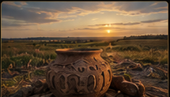
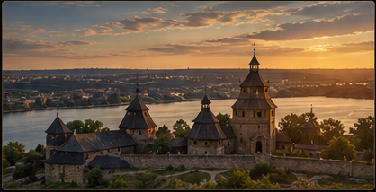
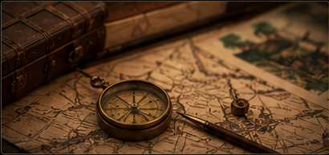
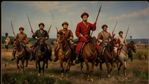
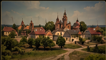

Давня історія та археологія
Дізнайтеся про найдавніші поселення, народи та археологічні пам'ятки, які допомагають відтворити історію краю.
Цей сайт присвячений історії Запорізького краю — території з багатою та різноманітною спадщиною. Тут зібрані матеріали про події, людей і місця, які формували розвиток регіону протягом століть.


Мета нашого проєкту — зробити історію Запорізького краю доступною, зрозумілою та цікавою для кожного.
Ми прагнемо показати, як змінювався край протягом століть, які народи та культури залишили тут свій слід, як формувалося Запоріжжя та чому його історична спадщина є важливою для сучасного покоління.

Дізнайтеся про найдавніші поселення, народи та археологічні пам'ятки, які допомагають відтворити історію краю.

Окремий розділ присвячений запорозьким козакам — їхньому способу життя, традиціям, боротьбі та ролі в історії України. Особливе місце займає історія Запорозької Січі.

Історія Запоріжжя пов'язана не лише з козацтвом. Розвиток регіону також формували переселенці різних народів, їхня культура, господарство, традиції та архітектура.
Промисловий розвиток став важливою частиною історії міста. На цій сторінці можна дізнатися про становлення великої промисловості та перетворення Запоріжжя на один із важливих промислових центрів України.
Цей сайт буде цікавим усім, хто хоче більше дізнатися про Запорізький край. Він може стати корисним для школярів та студентів, які вивчають історію, для туристів і мандрівників, які хочуть краще познайомитися з регіоном, а також для всіх, кому цікаві історія, культура та спадщина Запоріжжя.
Минуле формує наше сьогодення. Знання історії допомагає зрозуміти, як виникали міста, формувалися традиції, змінювалося суспільство та розвивався наш край. Зберігати історичну пам'ять — означає зберігати зв'язок між поколіннями.
Пізнаваймо минуле, щоб краще розуміти сьогодення.
Дякуємо, що подорожуєте історією Запорізького краю разом з нами.
Досліджуйте. Пізнавайте. Зберігайте історію.